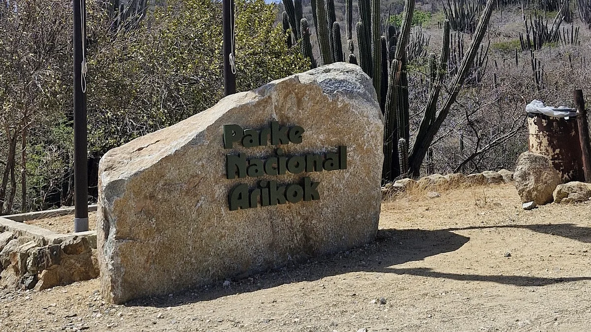

01
Parque Nacional Arikok
Parque nacionalUS$ 22
adulto; menor de 17 não paga

Ginelly.Q · CC0 · via Wikimedia Commons · recortada
Valor da entrada
Fonte: página de experiências da Aruba Conservation Foundation (acf.aw), que administra o parque, consultada em 15/nov/2026.
“Adults: USD22 per person”; “Children (<17): Free”. “A valid conservation pass is required to enter the park.”
Compra-se nas entradas de San Fuego e Vader Piet. O endereço antigo do parque (arubanationalpark.org) hoje redireciona para a fundação.
Lacuna declarada a página não diz se aceita cartão ou só dinheiro, nem o preço do passe anual.
“Adults: USD22 per person”; “Children (<17): Free”. “A valid conservation pass is required to enter the park.”
Compra-se nas entradas de San Fuego e Vader Piet. O endereço antigo do parque (arubanationalpark.org) hoje redireciona para a fundação.
Lacuna declarada a página não diz se aceita cartão ou só dinheiro, nem o preço do passe anual.
Dias e horários
O site diz “Open Daily”. O centro de visitantes de San Fuego abre das 8h às 15h30.
Fontes divergem para Vader Piet o mesmo site dá 8h30 às 15h numa página e 9h às 15h na outra.
Fontes divergem para Vader Piet o mesmo site dá 8h30 às 15h numa página e 9h às 15h na outra.
O que não pode
ATV, UTV e moto são proibidos nas áreas protegidas (acf.aw).
Onde fica